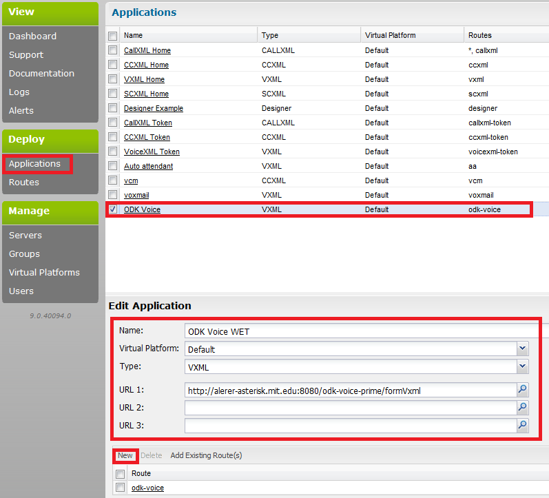
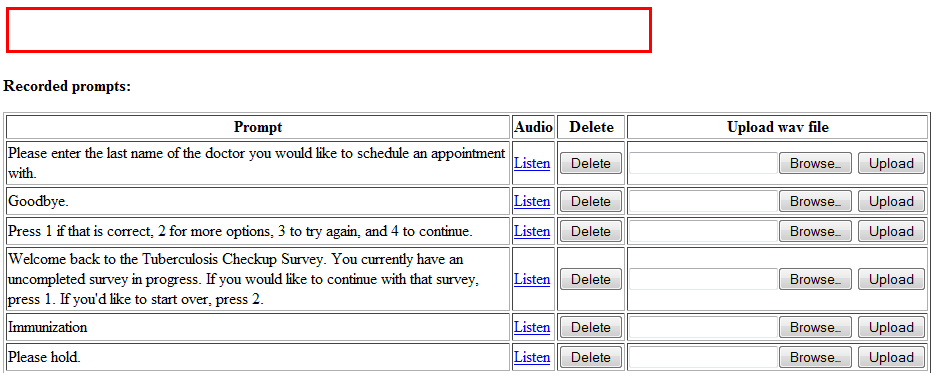
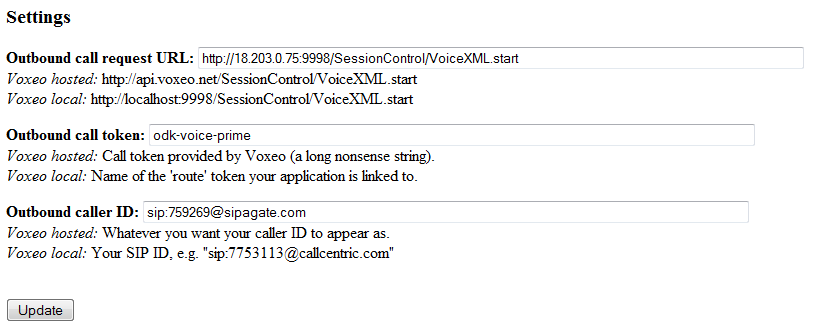
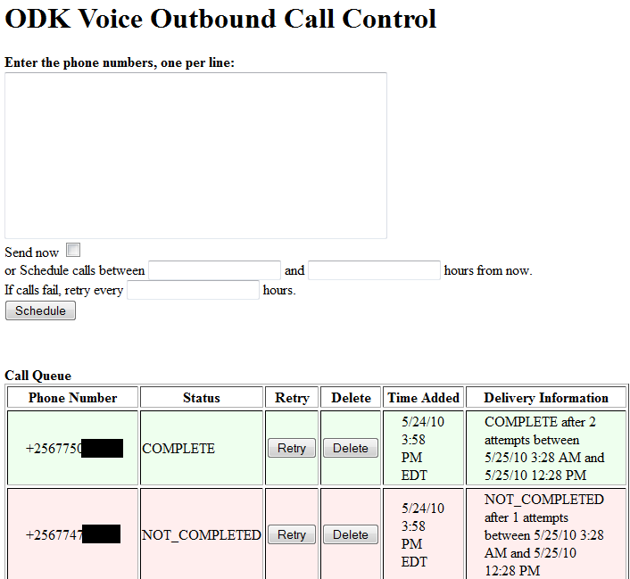

Download Prophecy 9 from the Voxeo Prophecy download site. You ned to install it on Windows, RedHat Linux, or CentOS. It doesn't have to be one the same server as ODK Voice, but it's preferable.
You need to connect Prophecy to a POTS gateway in order to make calls - you can either use a VoIP (SIP) provider or a hardware GSM modem. We will describe connecting to a SIP provider. There are hundreds of choices of SIP providers available online. We have had success using myWebCalls. Sign up with a VoIP provider, and you will be given a username, password, and SIP registrar domain (usually just the site domain).
You will need to make some changes to the Prophecy configuration file. Go to {Voxeo}/config/config.xml, and add the following lines (the lines below are for configuration with mywebcalls.com):
<!--+-+-+-+-+-+-+-+-+-+-+-+-+-
CT layer category
-+-+-+-+-+-+-+-+-+-+-+-+-+-+->
<category name="VoIPCT">
<item name="DialingIntlPrefix">00</item>
<item name="DialingPrefix">00</item>
<item name="VoipGateway1">86.53.0.135:5060</item>
<item name="Bridged">0</item>
<category name="Registrations">
<category name="CustomConfig">
<item name="Username">{username}</item>
<item name="Password">{password}</item>
<item name="Domain">sipagate.com</item>
<item name="Registrar">86.53.0.135:5060</item>
<item name="ExpirationTimeout">30</item>
<item name="VOIPType">Custom</item>
<item name="ResolveRegistrar">0</item>
<item name="PayloadSize" type="int">240</item>
</category>
</category>
</category>
sipagate.com is the SIP domain used by mywebcalls.com (most SIP providers use the same domain for web and SIP, but mywebcalls.com is an exception). 86.53.0.135:5060 is the SIP IP/port for sipagate.com. If you set ResolveRegistrar to 1, you should be able to just use the domain (i.e. sipagate.com) for the Registrar and VoipGateway1 fields; however, this has not worked for me. Unfortunately, figuring out the IP/port for your VoIP provider is not always simple; you can contact them and ask, or set up your VoIP with a softphone and use wireshark to see where the SIP requests are going.
See the Voxeo SIP config instructions for more details.
Then, go to {Voxeo}/home.html (the file), to enter the admin console.
Sign in (initial user/pass are admin/admin, you can change them), and click on the Applications tab. Click New in the upper right corner of the Applications window (not shown). In the Edit Application window, fill in the fields as shown below. Replace alerer-asterisk.mit.edu with your server IP (or localhost if Voxeo is installed on the same computer as ODK Voice). Click New in the Edit Application window, and create a route called "odk-voice" linked to your application.
Once you upload a form, ODK Voice will automatically determine the necessary prompts for recording and lets you record these prompts over the phone.
After you have set up ODK Voice with a VoiceXML client and POTS gateway, go to the 'Record Prompts' page on the ODK Voice website. Now, call ODK Voice from a phone, and when you connect, press 7 to enter the recording console (if you have uploaded multiple surveys, you'll have to select one survey over the phone before pressing 7). You will hear 'Press 1 to record this prompt or 3 to skip it'; at the same time, text should appear in the red box on the Record Prompts web page. Press 1 on your phone and speak the prompt in the red box into the phone. Press any key when you are done recording. You will hear the prompt you recorded and have the option to keep it or try again.
After you have recorded the prompts, hit refresh on your browser to see all the prompts you've recorded on the website. You can press 'Listen' to hear the prompt you've recorded, 'Delete' to delete that prompt (which will allow you to call in again and re-record it), or 'Upload' to upload a WAV file for that prompt. Uploaded WAV files must be 8kHz mono U-law encoded or they will not work. A variety of programs available on the internet will allow you to convert between WAV formats.
To perform outbound calling, click on Manage Outbound Calls from the ODK Voice home page .
You will first have to configure ODK Voice for outbound calling. On the bottom of the Manage Outbound Calls page, you will see a configuration box.
Below each box there are already instructions for what you should put in each box for Voxeo hosted (Evolution) and local (Prophecy) platforms. 'Outbound call request URL' is the URL that ODK Voice should poll to initiate a call. In the case of Prophecy, it is {Prophecy server IP}:9998/SessionControl/VoiceXML.start. Outbound call token is the 'route' for your application configured on the Prophecy server. Outbound caller ID must be sip:yoursipid@sipdomain.com.
Once outbound calling is configured, enter the numbers you want to call in the box provided, each on its own line. If you check the Send now box, the calls will be sent immediately (in order). Otherwise, you must enter a start and end time and a retry interval, as a decimal number of hours. For example, if it is 1PM and you enter 2.5, 4.5, and 1 (respectively), calls will be scheduled starting at 3:30PM and ending at 5:30PM, and if a call fails (i.e. user does not answer) it will be retried after 1 hour.
Below this form is a table that displays all the scheduled calls and their status. Before a call is sent, its status is PENDING. A call that is answered changes status to IN_PROGRESS, and once the call finishes, it can have a number of different statuses depending on the call outcome (COMPLETED, NOT_COMPLETED, NO_RESPONSE). For calls scheduled for later delivery, information about the delivery (number of attempts, etc.) is also provided.
ODK Voice is designed to work out-of-the-box with Javarosa-compliant XForms. However, not all XForms features are supported, and ODK Voice provides a number of voice-specific options that can be added to an XForm.
| Control Type |
|---|
| input type="int" |
| input type="date" |
| input type="string" (not recommended) |
| input readonly="true" |
| select1 |
| select |
| upload mediatype="audio/*" |
| jr:preload | jr:preloadParams | Data |
|---|---|---|
| property | phonenumber | The phone number for the call. |
| property | sessionid | The unique sessionid for the call. |
| complete | True iff the survey reached completion. |
<title>My First Survey#skipConfirmation=true</title>
<input ref="/survey/q1"> <hint>skipQuestionCount=true</hint> </input>
| Attribute | Scope | Function |
|---|---|---|
| digits | Q | For numeric question, play back the response as digits (e.g. two five) instead of a number (e.g. twenty-five). |
| skipInstructions | Q | Skip generic question instructions (custom instructions should be included in the question prompt). |
| skipQuestionCount | Q | Skip saying `Question 1 of 3' at the beginning of a question. |
| repeatQuestionOption | Q | Remind the user that they can press star to repeat the current question. |
| skipConfirmation | Q/F | Skip the confirmation step for a question. |
| customIntroPrompts | F | Replace the generic form intro prompts with custom prompts. |
| resumeDisabled | F | Disable the ability to call back and resume a form. |
| maxTime | Q | For audio question, set the maximum record time. |
| stringCorpus | Q | For string question, specify the corpus. |
| forceQuiet | F | Prompt the user to stop talking if they interrupt the instructions, and offer to call back if the connection remains noisy. Not well-supported. |